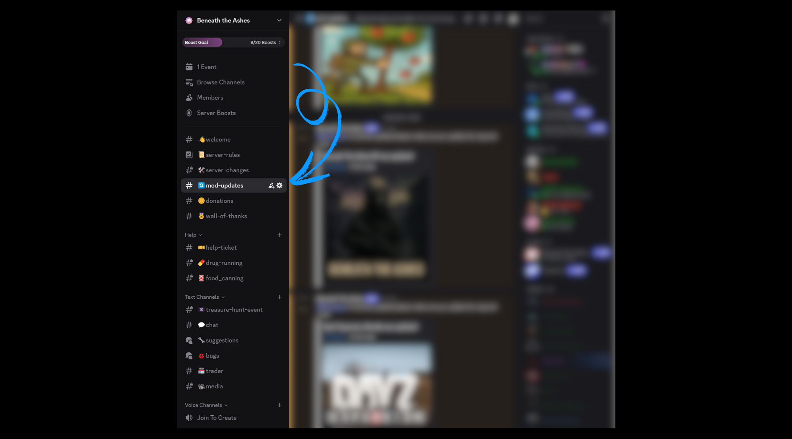
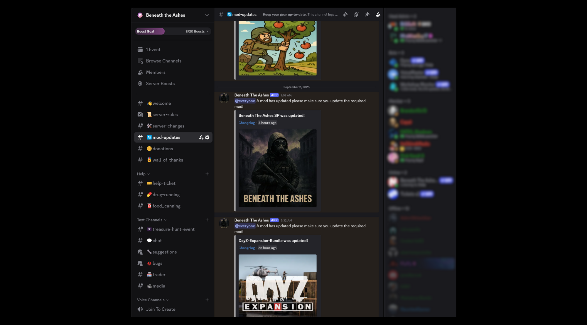
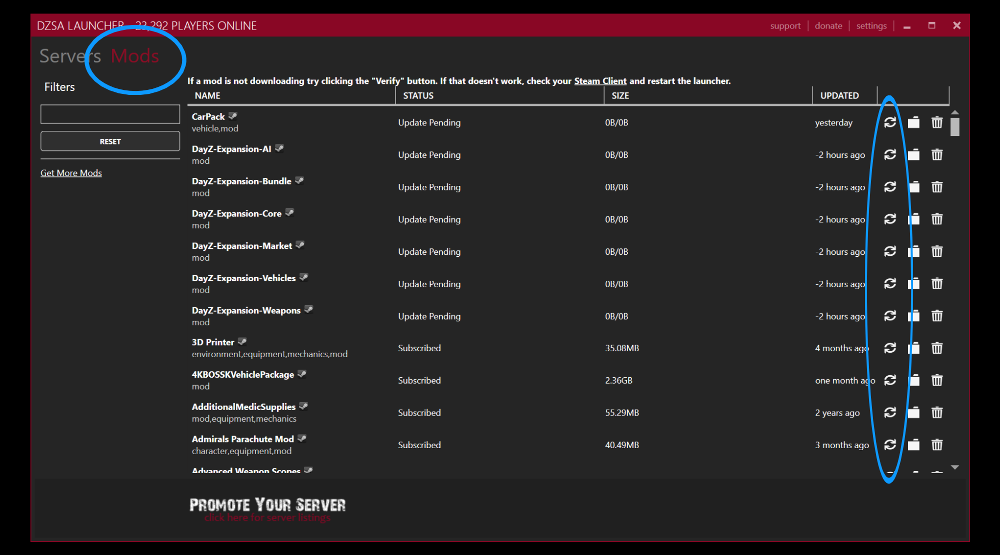
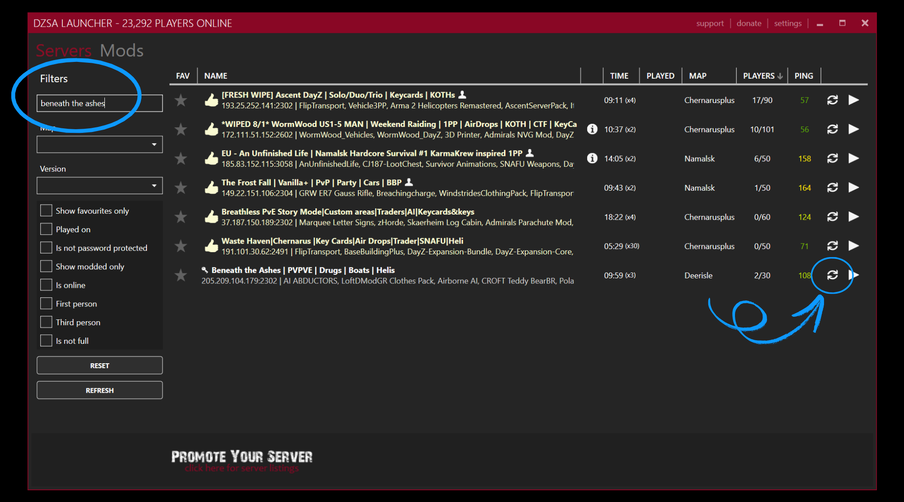
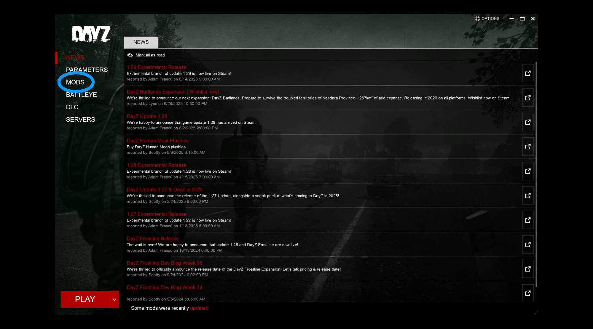
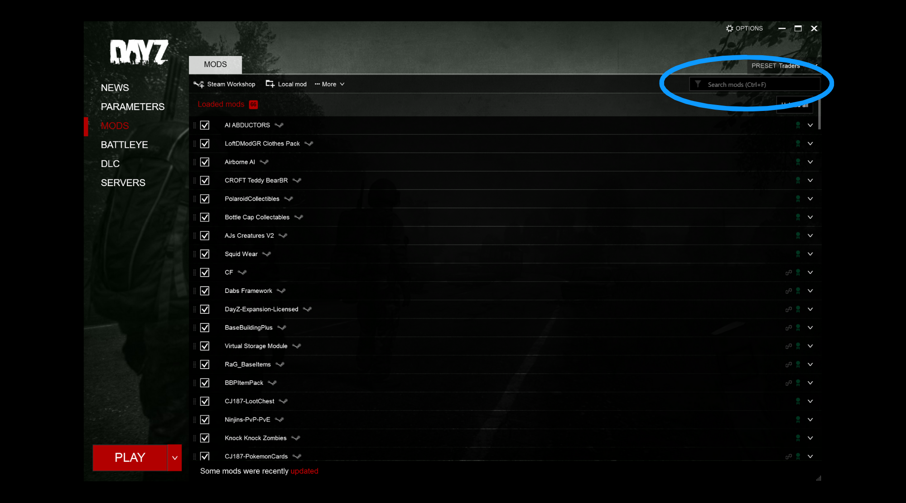
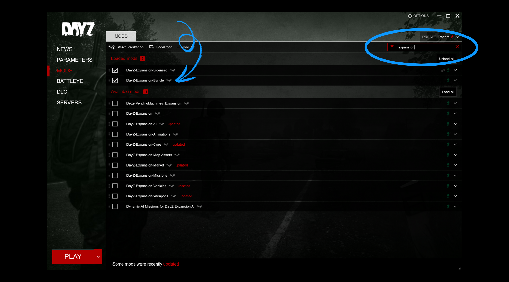
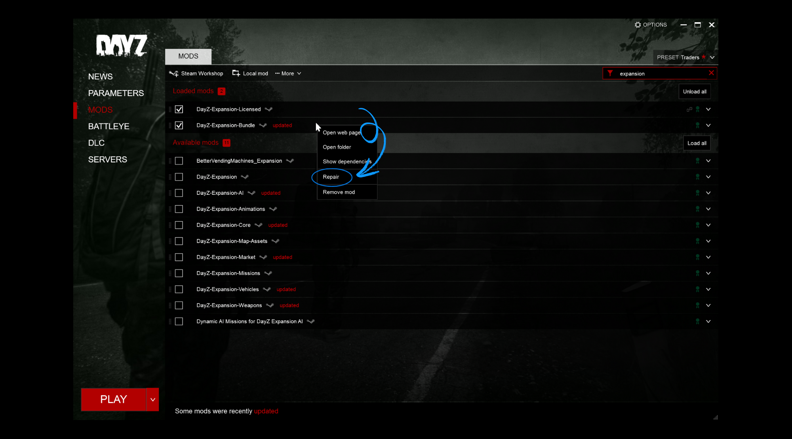
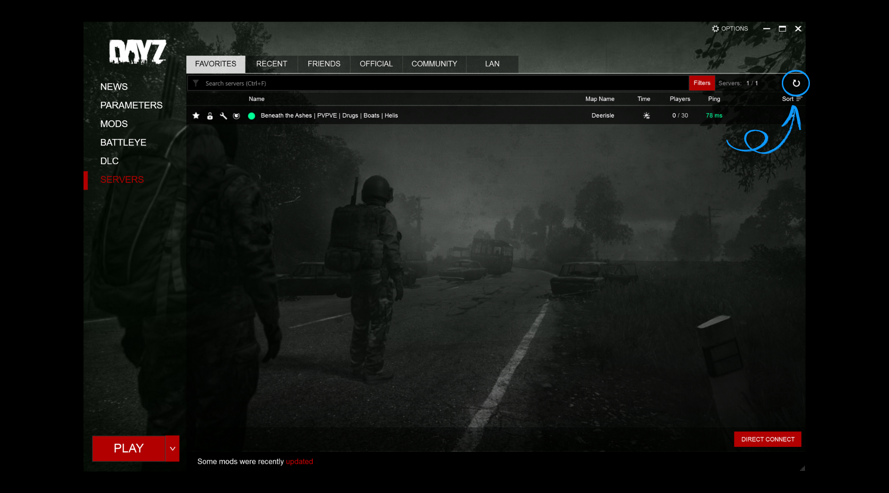

← Chernarus Guides
Guide // Server Support
PC Player Guide
Updating
Your Mods
Keep your DayZ mods current so you can join Beneath the Ashes without missing files, outdated content or verification errors.
Before You Start
- Close DayZ completely before updating.
- Keep Steam open and signed in.
- Check #mod-updates for the exact mod named in the server notice.
Check Discord First
When a server mod changes, the update notice is posted in Discord. Read the notice before launching so you know which files need attention.
What to look for
Use the bot notice to identify the mod that needs refreshing, then follow the launcher instructions on this page.
Choose Your Launcher
DZSA Launcher
- Open the Mods tab.
- Find the mod listed in #mod-updates.
- Click its circular-arrow Verify button.
- Open Servers, search for Beneath the Ashes, refresh, and join.
Official DayZ Launcher
- Open the Mods tab from the left.
- Search for the affected mod.
- Right-click outdated or missing mods and choose Repair.
- Open Servers, refresh the list, select Beneath the Ashes, and choose Play.
Step-by-Step Screenshots









Still unable to connect? Close the launcher, unsubscribe from the affected mod in Steam Workshop, subscribe again, and let it finish downloading. If the problem continues, open a Help Ticket so staff can assist.